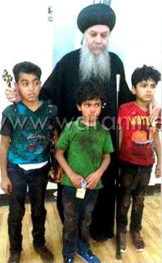

81 ودا دا بتاعة ،االحتمال بتاعة ،القداسة . بيقول الرسول و تتلخبطوا اوعوا فيكم عشمان هو بعدين و " : إنى ان أخاف المسيح فى التى البساطة عن أذهانكم تفسد هكذا بمكرها حواء الحية خدعت كما ه " اثرها فى بسيطة ،فعلها فى بسيطة ، عقيدتها فى بسيطة المسيحية . ، القوة مالك الكون يمال الذى كاهلل لكنها قوته و ببساطته الكون دبرُم . منه حته أخذتم انتم و . أخذ و البساطة أخذتم انتم يبقى القوة تم . افهموا فإنه بسطاء و أقوياء تكونوا و مظبوط بها تتمسكوا و مظبوط عقيدتكم " كله فجسدك بسيطة عينك كانت ان ًانير يكون . حلوين و كدا نيرين تبقوا . فيكم و يبارك ربنا و حياتكم فى البساطة وعيشوا . و المجد له امين األبد الى الكرامة . ( الصوت التسجيل عن نقلته ى : سويف ببنى مريم بنات دير من اماليا الراهبه ) استشهاد 53 قبطيا ارهابيين يد على متطرفين فىى 22 مايو 2102 االنبا نيافة نرى الصورة في الثالثة االطفال مع اغاثون باعجوبة نجوا الذين . القديس دير وآباء اسقف انطونيوس االنبا العظيم بكريفلباخ يطلبون السماء تعزيات والشفاء الشهداء السر للمصابين العاجل هؤالء شفاعة ويطلبون القديسن .
St. Markus · 2017 · Deutsch
قبطيا33 استشهاد-
Ausgabe 2 · Seite 81
